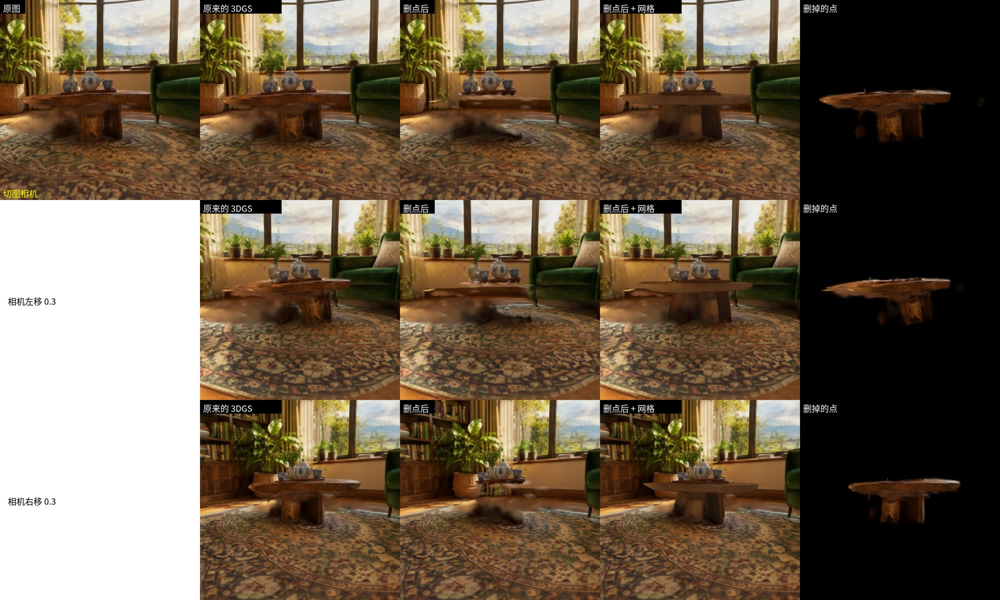
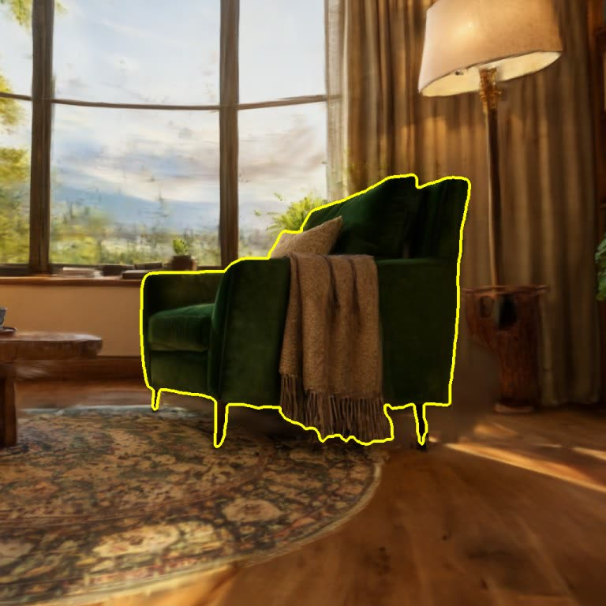
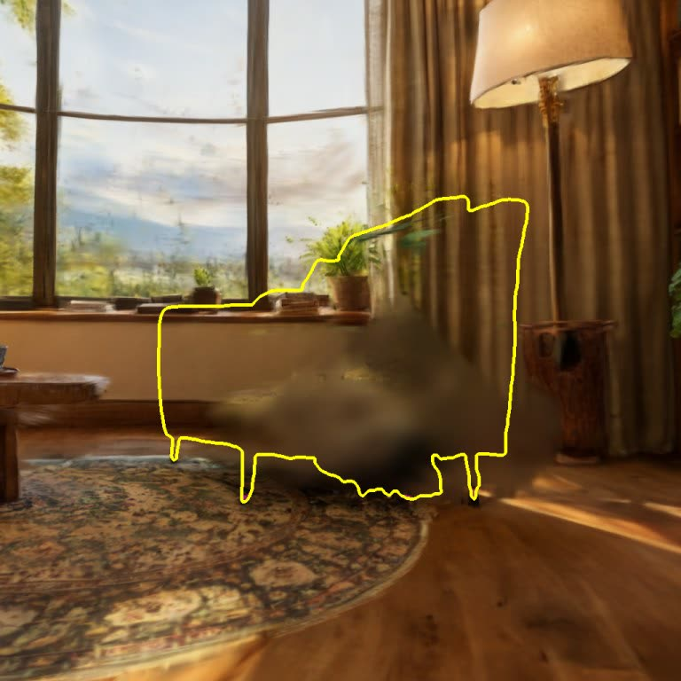
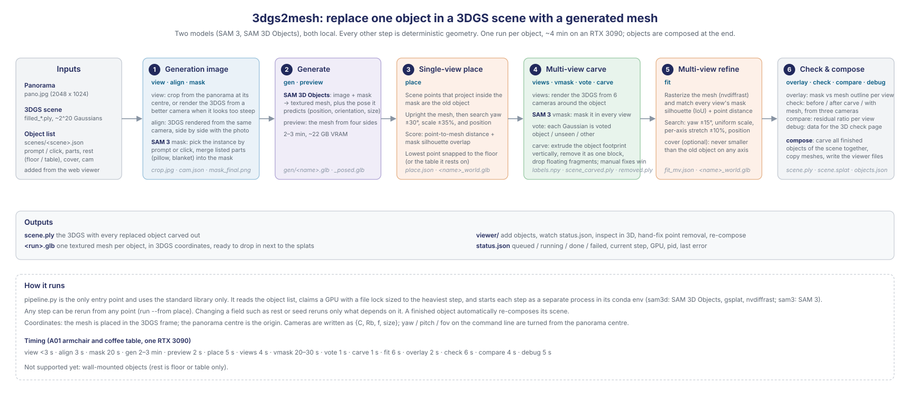
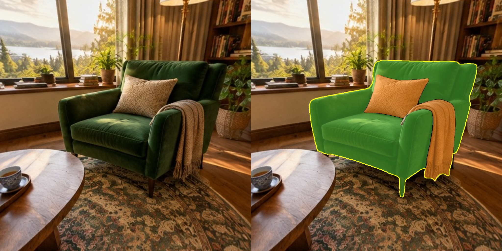
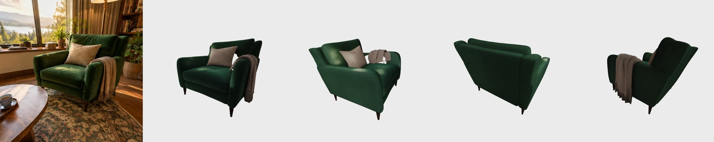
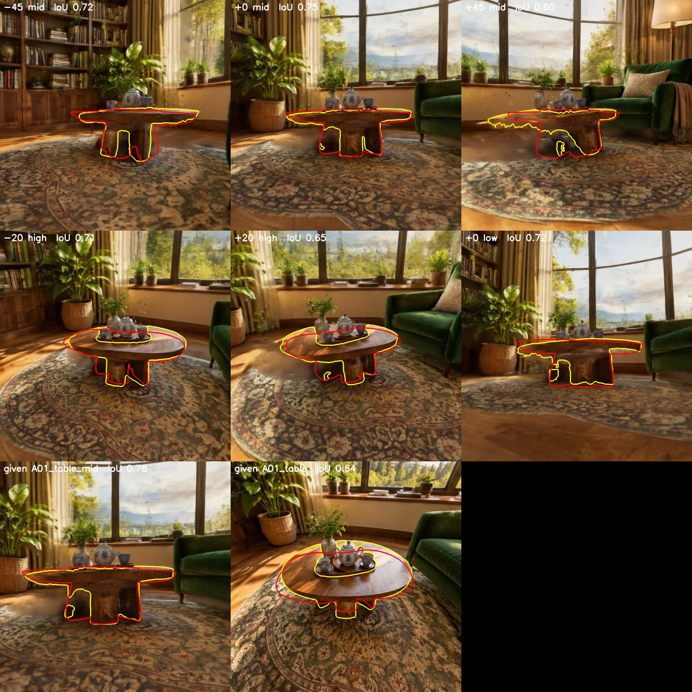
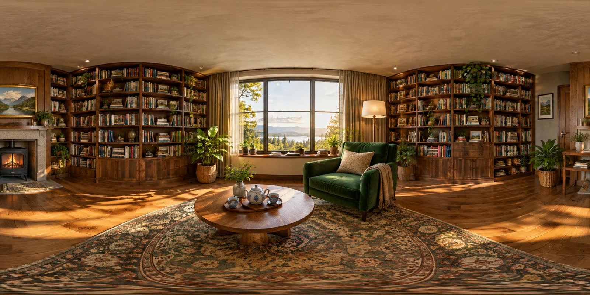

3DGS Object Replacement with Generated Meshes
WarpEngine (Oct 2026). Turn one object in a Gaussian-splat room into an editable, textured mesh that sits exactly where the old one was.
Project Overview
A 3DGS scene looks great but nothing in it can be moved. This tool takes a panorama, the room's 3DGS, and a prompt or a click, and replaces that object with a generated mesh: the old Gaussians are carved out, the new mesh is placed, scaled and refined until its silhouette matches the original from every view.
Only two models are involved, both local: SAM 3 for segmentation, SAM 3D Objects for mesh generation. Everything else (placement, point removal, multi-view refinement, checks) is deterministic geometry. A web viewer lets you add objects, watch progress, inspect in 3D and hand-fix point removal.
Result: coffee table, three cameras
Columns: original photo (top row only), the original 3DGS, after carving, after carving with the mesh placed, and the Gaussians that were removed. Rows: the generation camera, then the camera shifted 0.3 m left and right. The mesh holds its place when the camera moves; the carved hole is covered without leaving floaters.

Armchair: before and after
Drag to compare the original 3DGS with the carved scene plus the generated mesh, rendered from the same camera.


Pipeline
One entry script reads the object list, claims a GPU, runs each step in its own conda environment and writes a status file the viewer polls. Steps can be rerun from any point; changing a field (which surface the object rests on, a different seed) reruns only what depends on it.

The steps that matter
1. Segment and generate
SAM 3 picks the instance by prompt or click and merges listed parts (pillow, blanket) into the mask. SAM 3D Objects turns that one cutout into a textured mesh with its predicted pose.


2. Place, vote, carve, refine
Scene points inside the mask are the old object: the mesh is uprighted and searched over orientation, scale and position with its lowest point on the floor. Six extra views are rendered around the object, SAM 3 masks each, every Gaussian is voted object / unseen / other, and the object's footprint is extruded and removed as one block. Finally the mesh is refined against all silhouettes: orientation within 15 degrees, uniform scale, per-axis stretch within 10 percent.

Yellow: SAM 3 mask. Red: refined mesh silhouette. IoU per view after fitting.
Input
One panorama and the matching 3DGS. When the panorama centre looks down on an object too steeply (the coffee table), the generation image is rendered from the 3DGS at a better camera instead.
